The allure of elegant earthen architecture can be life-changing. At least that was the case for urbane New Yorker Simone Swan, who in the 1970s became fascinated with the ideas and designs of renowned Egyptian architect Hassan Fathy. Then the 40-something executive head of the Houston-based Menil Foundation, Swan moved to Cairo to study with Fathy. She became his most passionate advocate, and transplanted his adobe building techniques to the Southwestern United States.
Fathy’s quest was to provide comfortable and affordable housing for ordinary Egyptians. In pursuing that goal, he revived the traditional practice of building domes and vaults from sun-dried earth blocks, or adobes. By emulating ancient construction techniques and literally using the earth beneath his feet, Fathy designed beautiful, climate-appropriate buildings in the treeless Egyptian landscape. The harmonious proportions and intricate detailing transformed earth-block structures into simple yet sublime architecture.
The secrets of Near Eastern and North African domed, arched and vaulted architecture had nearly been lost to history, but Fathy managed to locate builders who had not lost the skill of constructing Nubian catenary vaults that do not require wooden form work to support the construction. Fathy’s designs integrated natural cooling strategies, and he applied his art to homes, schools and community buildings, including mosques and marketplaces. His designs were used throughout entire towns, such as Baris and New Gourna in Egypt.
After Fathy’s death in 1989, Simone Swan created a unique home and teaching center in Presidio, Texas, to demonstrate and showcase his building techniques. Adapting architectural ideas developed along the Nile River, Swan began creating a desert compound where adobe was also traditional - in the Big Bend country where the Rio Grande River separates the United States and Mexico.
The adobe tradition in the Southwest requires beams, or vigas, to support a flat roof. But the big trees along the Rio Grande have long since been harvested, so any timber used in construction has to be imported. Swan used her new building to demonstrate the benefits of Nubian vaults, which do not depend on a wooden structure. The adobe brick material is laid in a mud mortar, from the foundation to the top of the arch. The material performs the functions of wall, ceiling, structure and body of the home.
Summertime in the Chihuahuan Desert sees temperatures consistently rise above 100 degrees Fahrenheit - thus cooling strategies are key to comfort. Ventilation near the top of the tall vault form allows hot air to escape, displaced by cooler air drawn in from the north side of the building. Fathy understood that building orientation and ornament could reduce heat gain by creating shade at the hottest times of the day. He was a master of form and function, designing architecturally beautiful openings to capture cooling breezes, and directing the air currents through the interior to flush out the warm air. The properties of the adobe building itself - the thermal mass and permeability of earth - moderate the wide temperature swings of the desert.
Earthen materials create living environments that need to breathe (ventilate) and perspire (transpire) to be healthy. When finished with an earth or lime plaster, earthen walls allow moisture to move harmlessly through the wall system, creating a cooling effect, much in the same way that sweat cools a human body.
Swan’s home contains key elements of Fathy’s designs - the arched shapes, an inner courtyard, wind-catchers and other natural ventilation strategies. The house is also powered by renewable energy, running on electricity generated by photovoltaic panels and a wind turbine.
Through her nonprofit organization, the Adobe Alliance, Swan hosts educational workshops on both sides of the U.S.-Mexico border, building homes without lumber and using traditional adobes to create unconventional shapes.
In Swan’s very first class, a hard-working local woman stood out. Maria Jesus Jimenez was skilled with adobe, and she quickly grasped the craft of building adobe vaults and domes. “Jesusita” has been Simone’s principal artisan and workshop instructor ever since. While adobe construction is labor-intensive, a skilled building team can move remarkably quickly. Swan and her artisan crew adopted Fathy’s dome- and vault-building techniques, and adapted them to local materials - for instance, adding gelatinous cactus juice to stabilize plaster and creating shade with ocotillo stalks (a tall, spiny desert bush).
Adobe bricks utilize abundant and free local materials, and the lofty arch can shelter a comfortable living space. In his writing, and in his many enduring buildings, Hassan Fathy’s ideas and designs for an “architecture for the people” remain inspirational today. So is the work of designer and teacher Simone Swan, which offers a model of affordable, sustainable and beautiful structure, appropriate for desert climates the world over.
Fathy’s mission was to design and build earth dwellings in harmony with the local climate, environment and tradition. This builder’s material is available free, ready to be dug, then perhaps enhanced with sand or clay. If you make a mistake, you scoop it out or trowel it off and re-apply. Follow its known properties, and you are free to build a solid foundation of structurally strong walls with waterproof skin.
For the roofs of smaller earth brick, we follow consecrated mathematical formulas so archaic they are universal, hence also contemporary. A Nubian vault rises course by course on top of a wall while leaning against a higher back wall according to given measurements. Even distribution of the weight ensures structural solidity.
In design, climate and cosmos triumph. The sun is kept out at certain hours and seasons, heartily invited in at others. The moon is honored with a window to the east or a skylight.
Within the Adobe Alliance, the dictates of earth define our gestures, our program and policy. Artistic impulses appear now and then, such as the lightning pattern formed with mud bricks by the mason, or an impulse to sculpt a tortoise on a balustrade. We submit with a certain reverence to the laws of earth, mindful of its purity, its forgiveness and promise.
- Simone Swan, Adobe Alliance
The east patio is a comfortable place for dining in the summer and eating breakfast in the winter, while the west patio invites one into the noon shade during the summer. An east porthole near the head of a built-in adobe bed allows one to greet the sunrise.
The two courtyards provide natural ventilation. Predawn temperatures pave the courtyards with colder air; heat formed on the walls creates eddies, which stirs the colder air. At this moment, the coolness enters the house through opened windows, which are closed when the sun’s heat appears. Here in Presidio, Texas, on this fringe of the Chihuahuan Desert, we have temperatures of up to 120 degrees Fahrenheit.
I favor the 2-foot-wide floor-to-ceiling windows, which tend to keep out the sun’s glare while, as you walk by, you glance out at eight tiers of blue sierras to the south in Mexico. Some windows are aligned so as to see through the room, through the patio and through a room on the other side.
The space appears magically vast where the Great Hall (10 feet by 50 feet and 16-feet high) meets two 14-foot-high vaults at right angles: the living room vault, 10 feet by 21 feet, and the dining-kitchen vault, also 10-feet wide but 23-feet long. New visitors enter gasping at the unexpected spaciousness, which is amusing when you consider that each room is humbly 10-feet wide. They are welcomed onto adobe floors that are comfortably soft to tread.
- Simone Swan
|
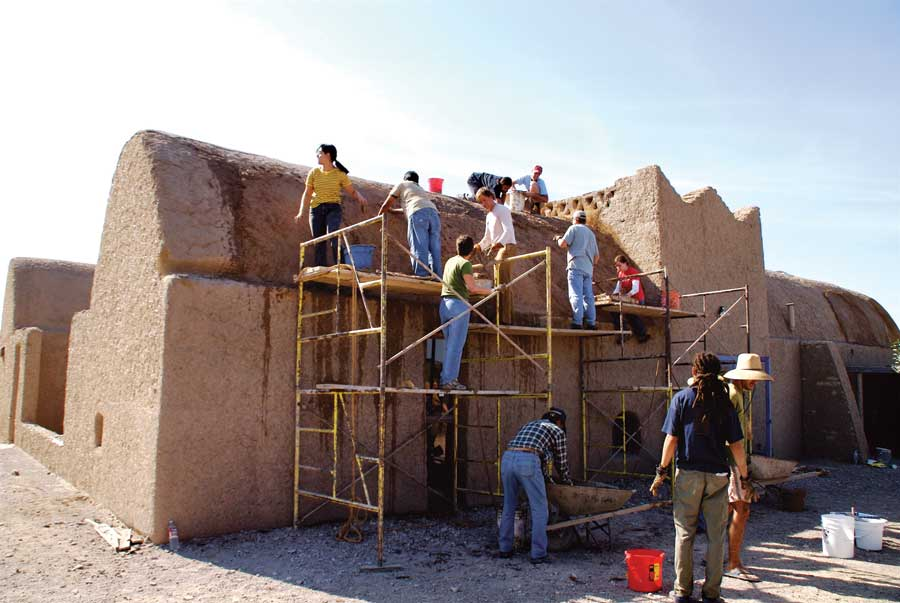 YASMINA ROSSI An adobe building workshop in Texas. Adobe buildings are well suited to desert climates. The vaulted roofs of this building are inspired by North African building techniques that make it possible to build without wood.
|
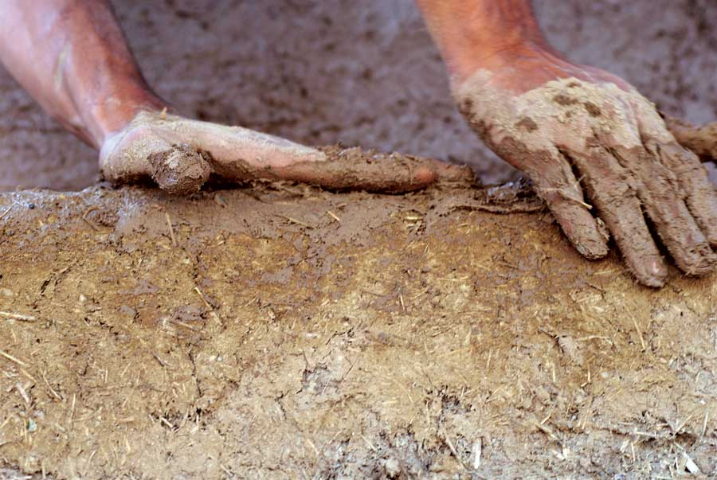 YASMINA ROSSI Earth makes a great building material. Not only is it natural, it’s locally available and often dirt cheap! |
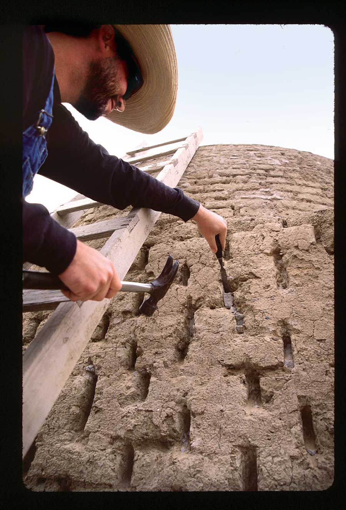 CATHERINE WANEK At Adobe Alliance workshops, students learn a variety of earth-building techniques. |
|
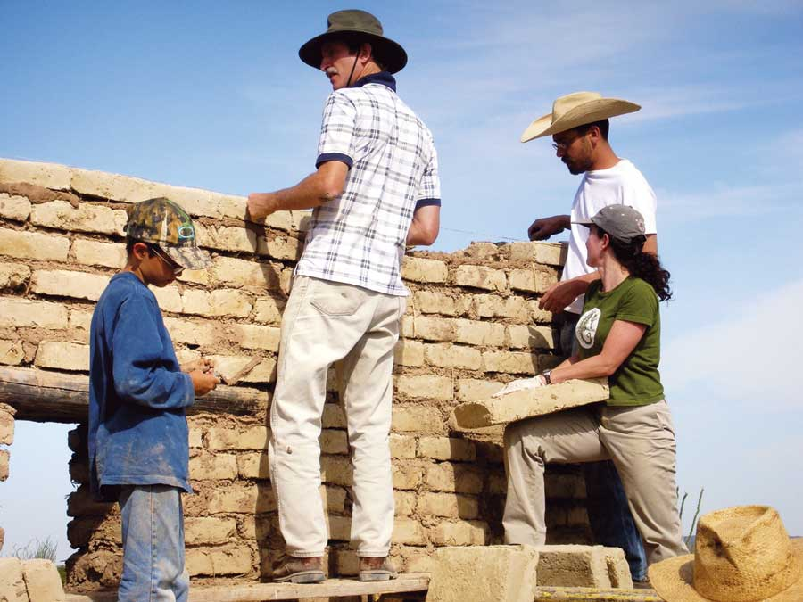 YASMINA ROSSI Adobe bricks are laid in a mud mortar. |
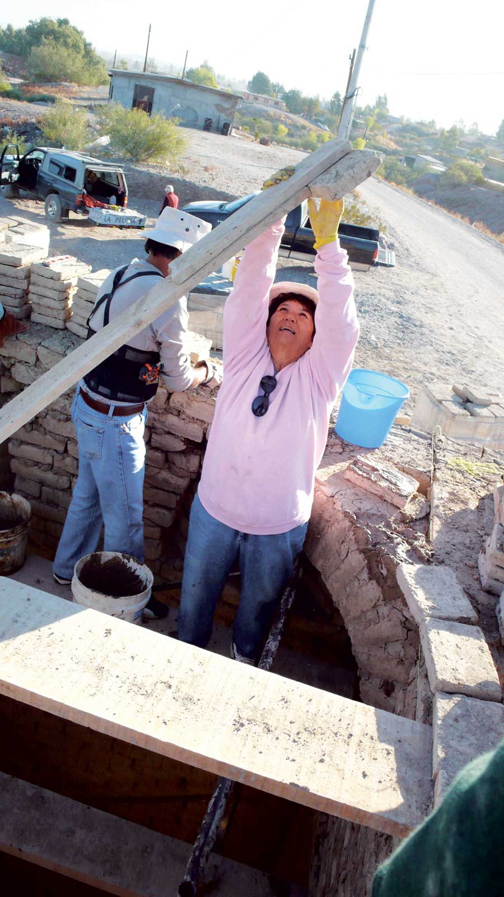 YASMINA ROSSI Project manager Maria Jesus Jimenez at an Adobe Alliance workshop. |
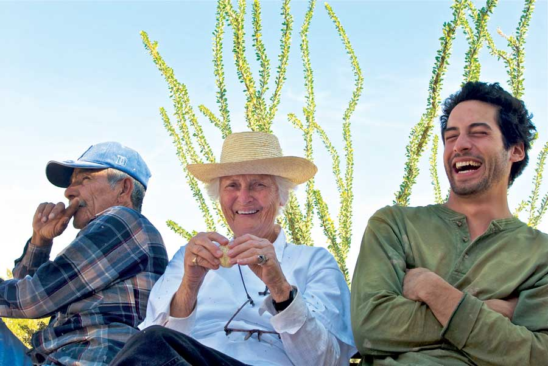 YASMINA ROSSI From right to left: Adobe mason Efren Rodriguez, Simone Swan and Steven de la Rosa, the instructor for a vault building workshop. |
|
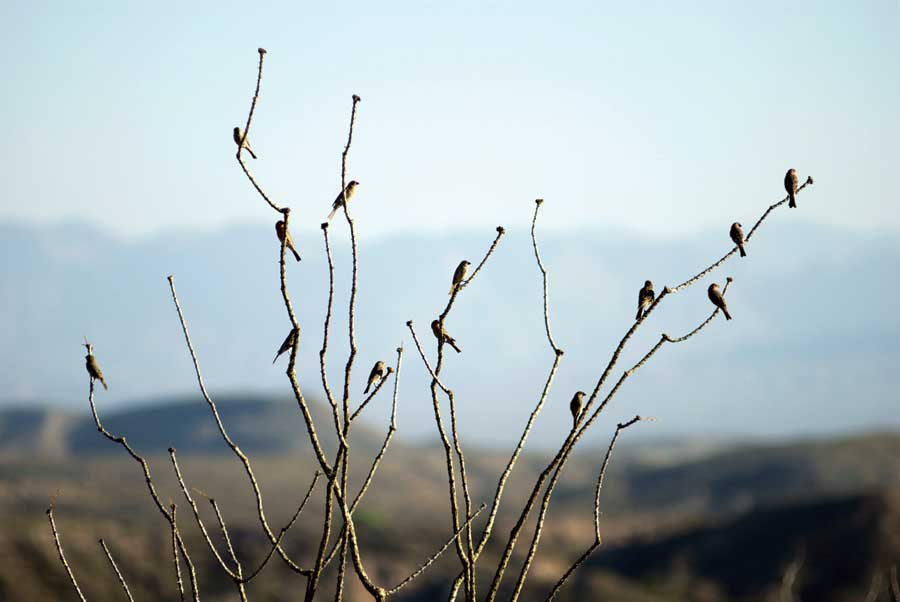 YASMINA ROSSI Simon Swan’s home is located on the fringe of the Chihuahuan Desert in Presidio, Texas. |
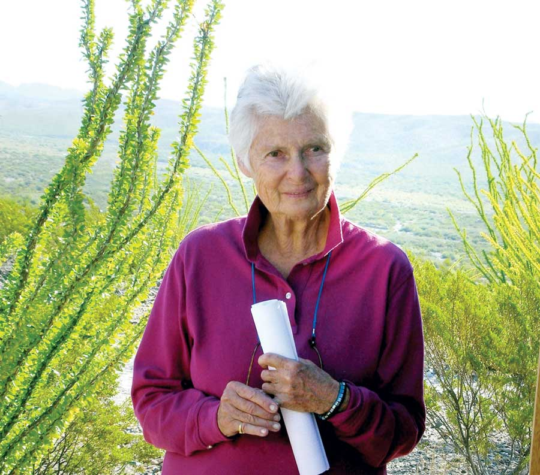 YASMINA ROSSI Simone Swan is a passionate advocate of adobe architecture. |
RIGHT LIVELIHOOD AWARD FOUNDATION Egyptian architect Hassan Fathy is the inspiration behind the adobe building techniques taught by Simone Swan and the Adobe Alliance. |
|
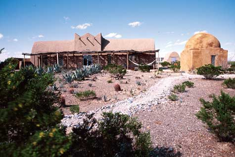 CATHERINE WANEK Simone Swan’s home and teaching center in Presidio, Texas, was built using natural building techniques suited to a desert environment. |
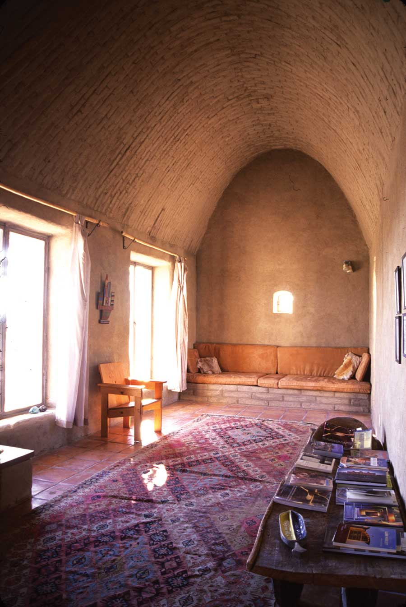 CATHERINE WANEK These rooms feel spacious because of the vaulted ceilings, even though they measure only 10 feet across. |
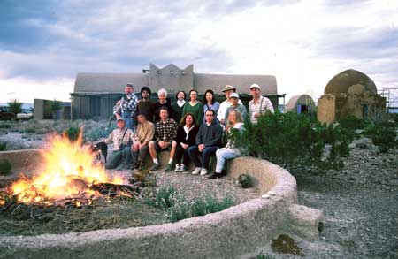 CATHERINE WANEK Learn more about the work of the Adobe Alliance and see many more photos at AdobeAlliance.org. |